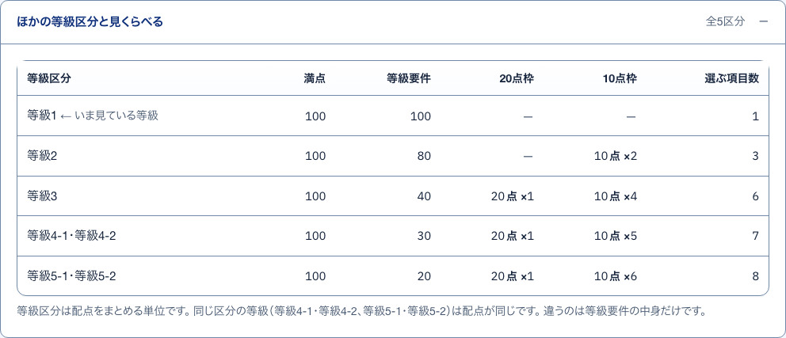
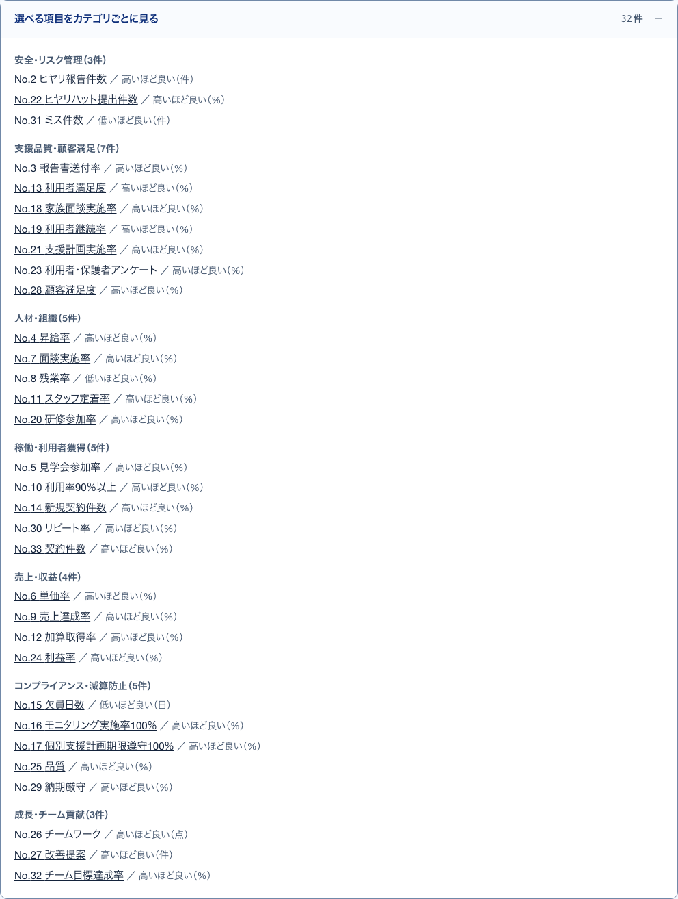
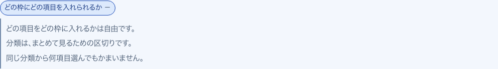
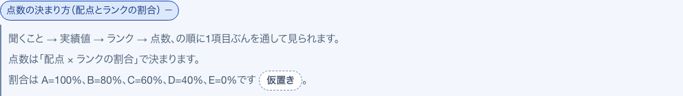
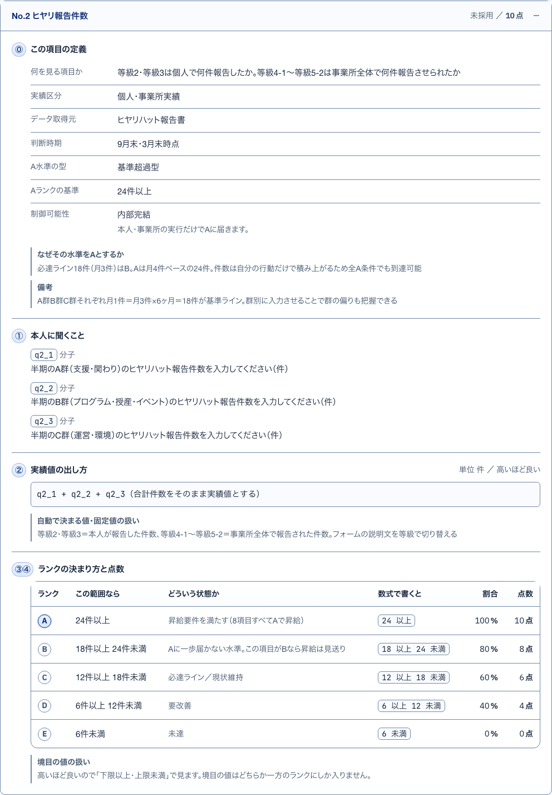

18ほかの区分と比較開いて見る
S42 評価の基準 ・ 押すもの: 「ほかの等級区分と見くらべる」

中に出るもの
- 等級区分・満点・等級要件・20点枠・10点枠・選ぶ項目数の表
- ← いま見ている等級
- 同じ区分の等級は配点が同じ
23カテゴリごとに見る開いて見る
S42 評価の基準 ・ 押すもの: 「選べる項目をカテゴリごとに見る」

中に出るもの
- カテゴリと件数
- 項目名と札「採用中」
- 高いほど良いか低いほど良いかと単位
中で押せるもの
- 項目名: その項目の採点の流れへ飛んで開く（→ S42）
19仮置き（昇格）説明
S42 評価の基準 ・ 押すもの: 「仮置き」
中に出るもの
- 昇格に必要な点数は未確定で叩き台の初期値
- 管理画面から変えられる
20仮置き（昇給額）説明
S42 評価の基準 ・ 押すもの: 「仮置き」
中に出るもの
- 昇給額は未確定で叩き台の初期値
- 管理画面から変えられる
21点数を出さない理由開いて見る
S42 評価の基準 ・ 押すもの: 「回答画面に点数を出さない理由」
中に出るもの
- 回答が点数合わせにならないようにするため
22枠と項目の決まり開いて見る
S42 評価の基準 ・ 押すもの: 「どの枠にどの項目を入れられるか」

中に出るもの
- どの項目をどの枠に入れるかは自由
- 分類はまとめて見るための区切り
- 同じ分類から何項目選んでもよい
24点数の決まり方開いて見る
S42 評価の基準 ・ 押すもの: 「点数の決まり方（配点とランクの割合）」

中に出るもの
- 聞くこと → 実績値 → ランク → 点数
- 点数は配点 × ランクの割合
- ランクごとの割合
25項目の採点の流れ開いて見る
S42 評価の基準 ・ 押すもの: 「未採用」

中に出るもの
- ⓪ この項目の定義
- ① 本人に聞くこと
- ② 実績値の出し方
- ③④ ランクの決まり方と点数